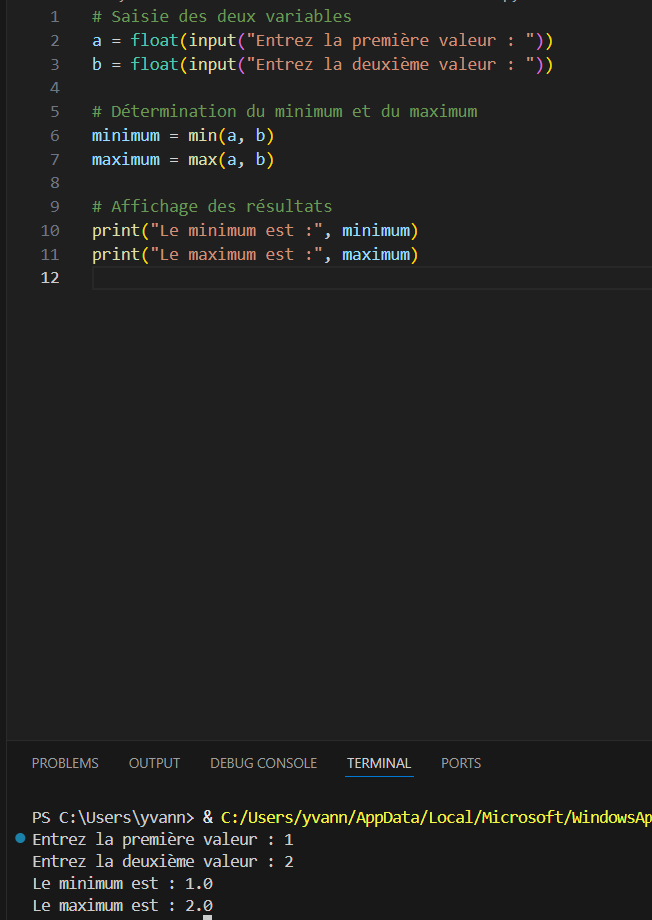

Implémenter des conceptions simples
Savoir traduire une conception en code fonctionnel, en respectant les bonnes pratiques et la logique attendue.

Exemple d'implémentation d'une conception simple en Python.

Exemple d'élaboration et d'implémentation d'une solution simple.